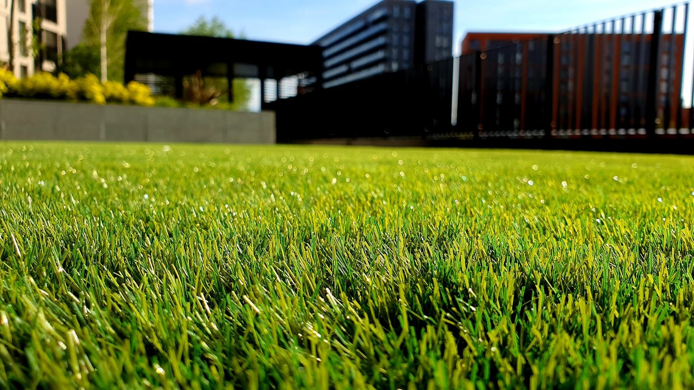

Accueil - Realisations
Nos realisations
Jardins crees, terrasses et amenagements menes autour de Vence et de la Cote d'Azur.
Jardins crees, terrasses et amenagements menes autour de Vence et de la Cote d'Azur.
 Jardin & terrasse arboree - Vence
Jardin & terrasse arboree - Vence Allee fleurie - Saint-Paul
Allee fleurie - Saint-Paul Amenagement de piscine - MouginsVilla mediterraneenne - Cap d'Antibes
Amenagement de piscine - MouginsVilla mediterraneenne - Cap d'Antibes Massif d'ornement - Vence
Massif d'ornement - Vence Pelouse & maison - Cagnes
Pelouse & maison - Cagnes Jardin d'hiver - Grasse
Jardin d'hiver - Grasse Potager paysager - Tourrettes
Potager paysager - Tourrettes Mur vegetal - Nice
Mur vegetal - Nice
Jardin luxuriant - Vence Gazon paysager - Biot
Gazon paysager - Biot Terrasse plantee - Saint-Jeannet
Terrasse plantee - Saint-JeannetDemandez un devis gratuit, on vous repond sous 48h.